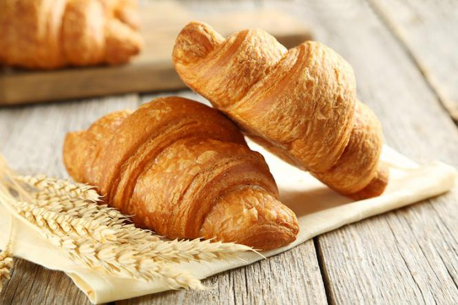

A croissant is a buttery, flaky, viennoiserie pastry of Austrian origin, named for its historical crescent shape. Croissants and other viennoiserie are made of a layered yeast-leavened dough. The dough is layered with butter, rolled and folded several times in succession, then rolled into a thin sheet, in a technique called laminating. The process results in a layered, flaky texture, similar to a puff pastry.
